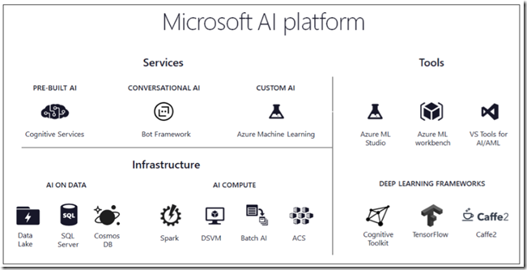

Before 1990, its was all CLI. Every software had commands & parameters. That was the standard of the Software development. Post that we had GUI based interfaces having buttons and mouse clicks. Around 1995, we had Internet Web UI as became the standard. After the success of smart phones in 2008, we saw more Responsive UI developed using jQuery,Bootstrap and now we live in the era of Conversation UI. Bots like Cortana, Siri, Alexa are around the block to help our modern needs. Below is the snippet which I borrowed from this ebook covering “how the enterprise information technology has transformed over the last few decades”. Thanks to the author who put the classification beautifully with examples.
Client-Server Revolution → Systems of records It was the client-server revolution that first enabled broad use of information technology to manage business. Organizations first built systems of records: Customer Relationship Management (CRM) systems; Human Capital Management (HCM) systems for HR; and Enterprise Resource Planning (ERP) systems for financials and key assets. Internet Revolution → System of engagement The rise of the internet, mobile, and chat allowed us to create systems of engagement that interfaced between the systems of records and interacted directly with customers and suppliers. AI Revolution → System of intelligence What is emerging now are systems of intelligence that integrate data across all systems of record, connect directly to systems of engagement, and build systems that understand and reason with the data. These systems can drive workflows and management processes, optimize operations, and drive intelligent interactions with customers, employees, suppliers, and stakeholders.
Below is our Microsoft AI platform story covered in one slide deck. If you are wondering how your organization can start the AI journey today, then below is the some of the key resources for learning,
Azure AI -> A page where our Microsoft AI story is well articulated (In the page, scroll down for ‘AI Services’).
Intelligent KIOSK –> must try windows app to demonstrate Pre-built AI (Cognitive APIs) & store url
Seeing AI –> Great demo app on iOS using our cognitive APIs. Good to install and check the capability it brings in
Conference Buddy –> ingredients needed to develop an intelligent chatbot. sample code for try one.
Microsoft AI School –> Another great learning resource our Services and ML offerings
The JFK Files –> Cognitive Search - An AI-first approach to content understanding – code
{kind=link}